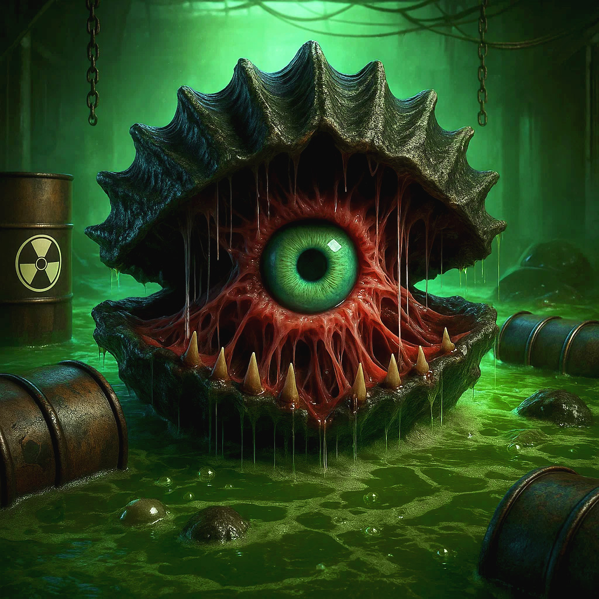
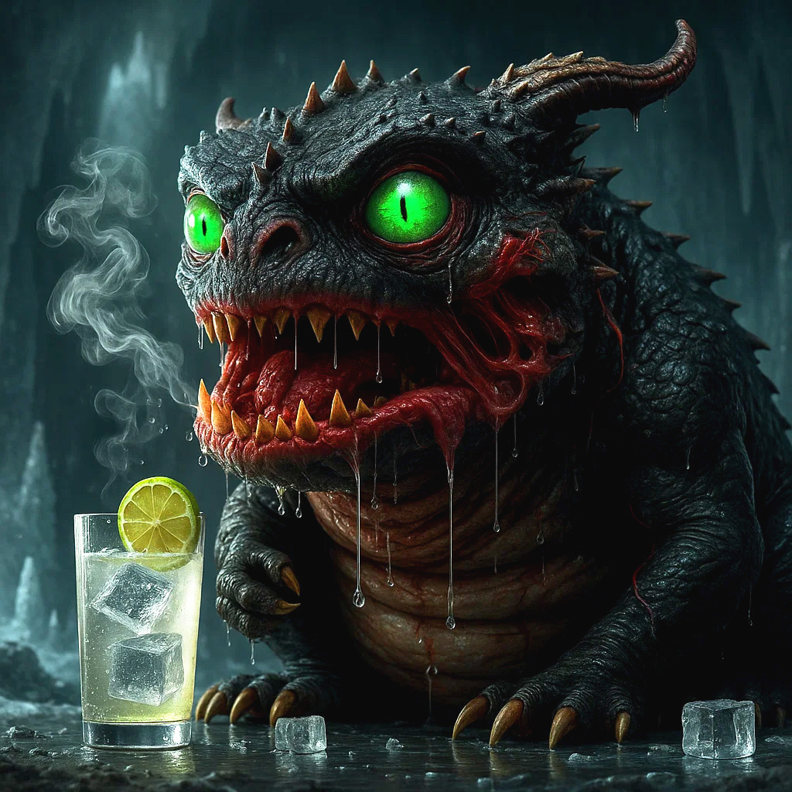
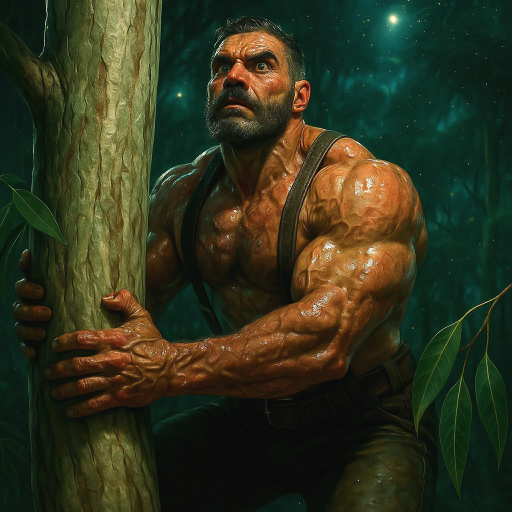

Esplora i Ginocchi
Punturirma
Roboshop
Robinario
Prepezio
Gorettore
Guerraniglio
Tossicozza
Scarabarman
Sborniadrago
Tigrallo
Roboraffa
 Florona
FloronaRan-occhio
Arundizilla
Gelsosauro
 Lavandasma
LavandasmaSalviananda
Koajhonny
Rosiro
Rosella
Cybermint
Rosmaruma
Cetriolana 8ª
Rosmanguilla
Banona
Tony E./Ans.
Cervarancio
Merlotta
Corvananas
Fiammaciofo
R. Cagnolina
Pipimone
Eremillo
Mangodillo
Lampolpo
Delfimaru
Pignacano
Pompecora
Winenot?
Callista
Cannellorca
Anicinzia
Fumello
Peperonbro
 Blobaffè
BlobaffèSpeziatopo
Borghesiglio
Teabear
Tzatzikeye
Fuega